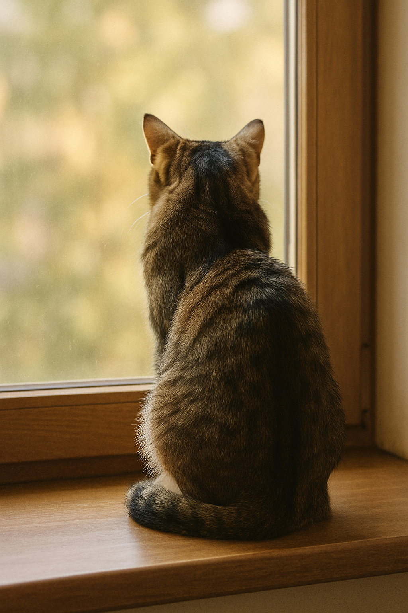

Ejercicios con IA (Introducción a HTML)
1. Generador de contenidos con IA
1.1 Presentación (estilo formal)
Bienvenidas y bienvenidos a esta página dedicada a los gatos. Su historia, conducta y convivencia con las personas nos brindan un marco ideal para explorar cómo la Inteligencia Artificial puede ayudar a generar, validar y adaptar contenidos web. A lo largo de este sitio, analizaremos información, crearemos formularios y practicaremos buenas prácticas semánticas en HTML.
“La IA es una herramienta: el criterio y la autoría siguen siendo humanos.”
1.2 Presentación (estilo divertido)
¡Miau-dición oficial! Aquí aprenderás HTML con ayuda de la IA, mientras descubrimos curiosidades gatunas. Prometemos cero arañazos, muchos maullidos y un puñado de ejemplos que te harán ronronear de satisfacción.
“Si un gato pisa el teclado, es pair programming felino.”
1.3 Imagen libre de derechos sugerida por la IA

2. Validación de código con IA
2.1 HTML con errores (para análisis)
<!DOCTYPE html>
<html>
<head>
<title>Página con errores</title>
<meta charset="UTF-8">
</head>
<body>
<h1>Título principal
<p>Este párrafo no se cierra correctamente
<img src="gato.jpg">
<ul>
<li>Elemento 1
<li>Elemento 2</p>
</ol>
</body>
</html>2.2 HTML corregido (sugerido por la IA)
<!DOCTYPE html>
<html lang="es">
<head>
<meta charset="UTF-8" />
<title>Página corregida</title>
</head>
<body>
<h1>Título principal</h1>
<p>Este párrafo ahora está correctamente cerrado.</p>
<img src="gato.jpg" alt="Gato de perfil" />
<ul>
<li>Elemento 1</li>
<li>Elemento 2</li>
</ul>
</body>
</html>Después de aplicar las correcciones, valida el resultado final en el W3C Validator.
3. Formularios inteligentes
3.1 Campos sugeridos por la IA
- Nombre completo (obligatorio)
- Correo electrónico (obligatorio)
- Contraseña (obligatorio, con requisitos mínimos)
- Teléfono (opcional, con validación básica)
- País / Región (selección)
- Fecha de nacimiento (opcional)
- Aceptación de términos (obligatorio)
3.2 Formulario de registro (HTML puro con pattern)
4. Página de curiosidades
4.1 Diez curiosidades sobre los gatos
- Los gatos pueden hacer más de 100 tipos de vocalizaciones.
- Duermen entre 12 y 16 horas al día.
- Su ronroneo puede tener efectos calmantes en humanos.
- Tienen excelente visión nocturna.
- Su olfato es mucho más sensible que el humano.
- Poseen bigotes que les ayudan a medir espacios.
- Marcan territorio con glándulas en mejillas y patas.
- La “posición del pan” indica relajación y confort.
- El juego de caza desarrolla coordinación y reflejos.
- Se comunican también con la cola y las orejas.
4.2 Lectura recomendada (orden sugerido)
4.3 Tabla de datos (ejemplo)
| Característica | Promedio en gatos | Observaciones |
|---|---|---|
| Horas de sueño | 12–16 h/día | Mayor actividad al amanecer y atardecer |
| Esperanza de vida | 12–18 años | Depende de cuidados y ambiente |
| Comunicación | Voz, postura, cola | El ronroneo no siempre implica felicidad |
5. Prompting para imágenes
5.1 Prompt de ejemplo (para una IA de imágenes)
Prompt: “Fotografía hiperrealista de un gato doméstico de pelo corto, sentado en el alféizar de una ventana, de espaldas a la cámara mientras mira hacia afuera. Luz natural suave entrando por la ventana, fondo ligeramente desenfocado para resaltar la silueta del gato. Colores cálidos y ambiente tranquilo.”
5.2 Inserción de la imagen en HTML
5.3 ¿Por qué el atributo alt es esencial en accesibilidad?
El texto alternativo describe la imagen para personas que no pueden verla, como usuarias de lectores de pantalla o quien tenga una conexión lenta. Además, el atributo alt ofrece un contenido equivalente cuando la imagen no se carga. Debe ser breve, preciso y centrado en la función de la imagen en el contexto.